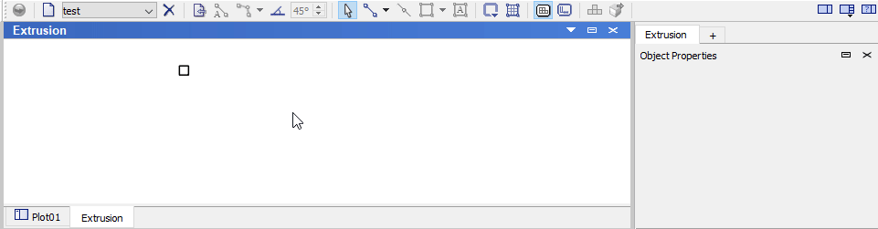
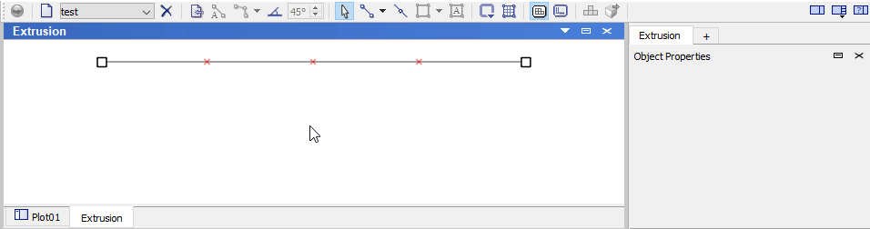
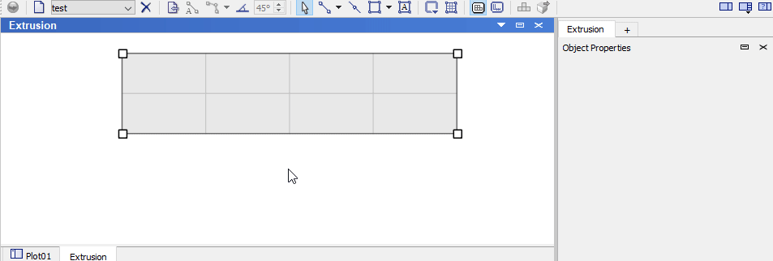
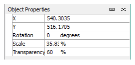
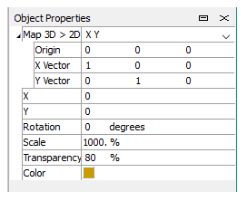

对象属性
在构造视图中选择对象后，即可编辑其属性。如果控制面板（control panel）中的对象属性控件组可见，可在其中编辑属性。否则可在构造视图中按 [空格键] 显示弹出属性编辑器。要在编辑器中的属性之间切换，请按 Ctrl + ← 或 Ctrl + →，或单击编辑器左上角出现的箭头
构造视图中可编辑属性的对象包括：点、边、控制点、块体、图像和几何数据集。图像和几何数据集的属性可在控制面板中编辑，但不能在弹出属性编辑器中编辑。
单个点


图 1：单个点的弹出属性编辑器与控制面板
坐标/位置：这是点的 x、y 位置。可用数字或 FISH 变量指定（注意，单个 FISH 变量可包含一个矢量，因而可作为点位置的有效输入）。
分组：可将一个或多个点分配给某个具名分组从而将其归为一组。更多信息见 分组（Groups） 主题。
边


图 2：选中边的弹出属性编辑器与控制面板
边类型：指定三种边类型之一：直线、曲线、圆弧。使用各类边的信息见 曲线边（Curved Edges） 主题。
网格单元数：指定沿边的网格单元数。这将覆盖先前应用于包含该边的块体的任何自动网格划分。
比率：仅在选中单条边时可编辑比率。它指定沿边使用的网格划分比率，基准设置为 1（无比率）。虽然有效取值范围从零到无穷大，但大多数情况应合理落在 0.5 至 2 之间。
分组：可将一个或多个边分配给某个具名分组从而将其归为一组。更多信息见“分组”主题。
块体


图 3：块体的弹出属性编辑器与控制面板
网格单元乘数：沿块体各边指定的网格单元数将乘以此处提供的整数值。控制块体内网格划分的方法的更多信息见 网格划分（Zoning） 主题。
分组：可将一个或多个块体分配给某个具名分组（group）从而将其归为一组。
图像

图 4：图像的控制面板
X 和 Y：所选图像左上角的坐标。
旋转：指定围绕图像左上角的旋转角度。使用鼠标旋转图像时，将绕其中心旋转。
比例：这是图像缩放到的原始尺寸百分比。图像将以上左角为参考点进行缩放。
透明度：表示图像透明程度的百分比。
几何数据

图 5：导入几何数据的控制面板
几何数据可以是导入的 DXF 文件、STL 文件或 Itasca 的 .GEOM 文件之一。
三维映射到二维：导入三维数据文件后，可使用此处的控件更改其在显示中的原点和方位。
X 和 Y：几何相对于其原点的位置。
旋转：围绕几何数据中心的旋转。
比例：相对于几何原点的缩放。
透明度：表示数据透明程度的百分比。
颜色：单击颜色控件可更改用于表示几何数据的颜色。
| 这些内容对您有帮助吗？… | FLAC3D © 2019, Itasca | 原文更新于 2020 年 10 月 8 日 |